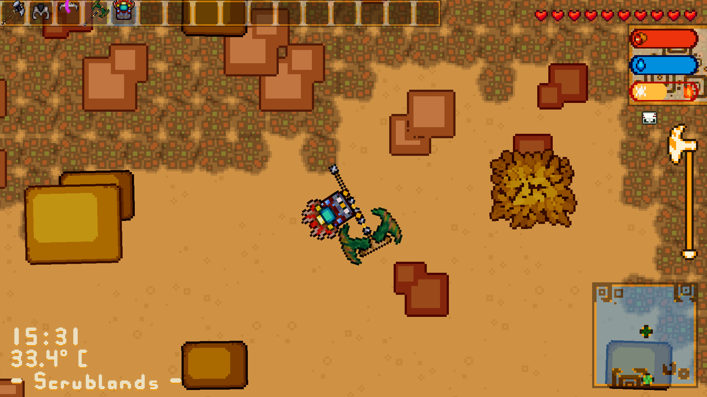
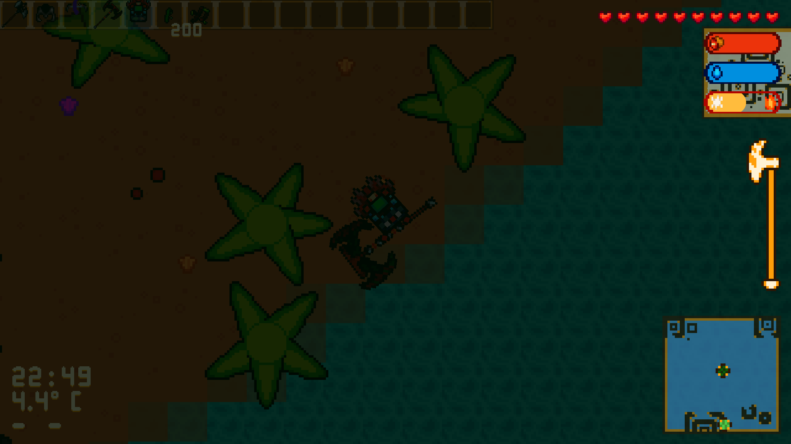
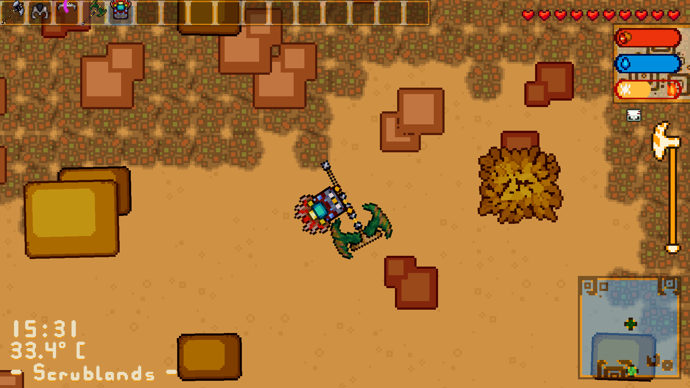
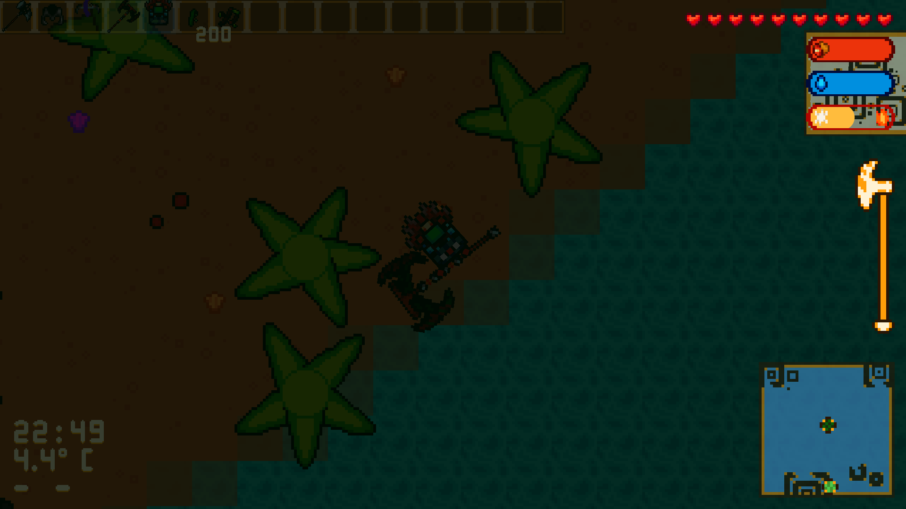

Explore and survive the Gingerbug Isles, their depths, their seas and their skies. Build a fort alone or with friends, fight the beasts across the land, and defend your home from vengeful creatures and monsterous intruders.
Screenshots
 



Downloads
Latest development release for web:
Demo v1 for desktop:
How to run Gingerbug for desktop
Gingerbug is easy to run on all platforms, just follow the steps for your operating system.Windows
On Windows, simply download Gingerbug, unzip it, and run the file named gingerbug.exe.macOS
First, download Gingerbug, then you'll want to extract the zip file. From there open it, if it gives you a unverified access error, watch this video on how to fix that.Linux
On Linux, simply download Gingerbug, unzip it, and run the file named gingerbug.Contact
You can contact the Gingerbug team (Ren and Stormy) through Discord or Email.
- Discord: https://discord.gg/FqgqsvFnRG
- Email: contact@gingerbug.dev